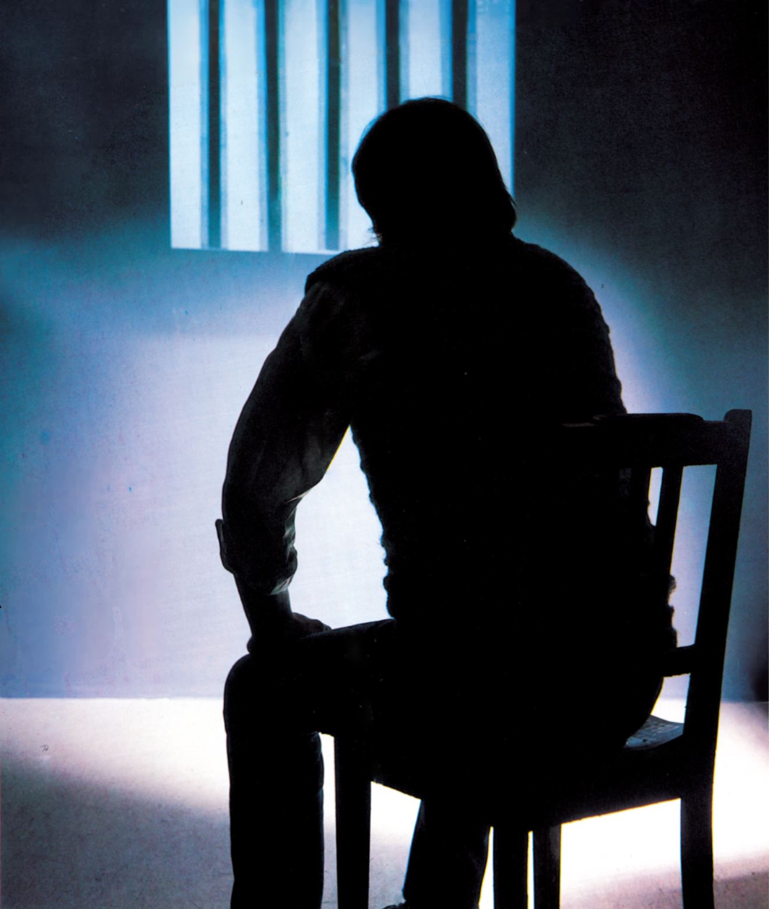
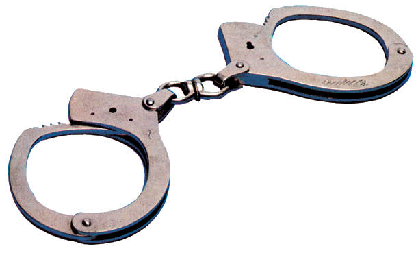

Der Sumpf
Wer hat nicht schon selbst Programme zumindest gesehen, in denen die Kürzel Jedi, KBR, Kotzbrocken, Oleander, oder 1103, oder Nachrichten wie »Brooken by Antiram. Greetings to Zeropage and Superman« von der dunklen Herkunft zeugen? Wir haben uns in den Untergrund begeben und mit der »High Society« der deutschen Knacker gesprochen. Die Creme de la creme der Knacker, rund ein Dutzend Leute, haben sich zu einem »Club« zusammengeschlossen.
Das wohl überraschendste Ergebnis dieses Interviews dürfte die Aussage der Knacker sein, künftig mit einigen Händlern zusammenarbeiten zu wollen. Wie kann es dazu kommen, daß die Geschädigten mit den Schädigern kooperieren? Ein derartiges »Gentleman Agreement« wird nur geschlossen werden, wenn beide Seiten einen gewissen Vorteil daraus ziehen können. Der Vorteil für die Knacker ist offensichtlich. Sie werden direkt von den Händlern mit der neuesten Software versorgt. Die Knacker versprechen im Gegenzug diese Programme zumindest eine Zeitlang nicht weiter zu verbreiten, oder nur im engsten Kreis. Somit hat der Händler eine ausreichende Zeitspanne zur Verfügung, das Programm in kostendeckenden Mengen zu verkaufen — und das geht nur, wenn es noch nicht auf dem Schwarzmarkt zu haben ist. Außerdem beraten ihn die Knacker, welche Programme er sich aus den USA oder England besorgen soll. Die Knacker haben ja die meiste Erfahrung und oft auch die besseren Beziehungen und wissen deshalb auch, welche Programme sich gut verkaufen lassen und welche nicht. Soweit so gut, aber es gibt auch noch eine andere Sorte, die sich nicht diesem Abkommen angeschlossen haben: die Raubkopierer. Um den Unterschied aufzuzeigen soll eine Definition der Knacker verwendet werden. Originalton:
»Knacker oder Cracker sind Leute, die den Kopierschutz entfernen, so daß man das Programm einfach mit LOAD und SAVE vervielfältigen kann. Zudem werden die Programme »komprimiert«, das heißt die platzaufwendige Abspeicherung des Orginals wird reduziert, damit aus Gründen der Übersichtlichkeit mehr Spiele auf eine Diskette passen (kein Wunder bei mehr als tausend Programmen).
Kopierer hingegen haben spezielle Kopierprogramme (Block-Copy, F-Copy), mit denen der Kopierschutz einfach mitübertragen wird. Die wollen durch den Verkauf dieser Programme Geld machen.
Und dann gibt es in Deutschland seit neuestem die Hacker. Diese dringen über Modem und Akustikkoppler in Datenbanken anderer Leute ein und schauen sich da ein bißchen um. Bei Eduscho werden sich, so haben wir gehört, in nächster Zeit einige Leute über eine unerwartete Gehaltserhöhung freuen können. Es gibt mittlerweile sogar ein eigenes Magazin, die Datenschleuder vom Chaos Computer Club in Hamburg. Da stehen prima Tips und Telefonnummern drin.«
Nach dieser kurzen Darstellung, wer eigentlich was macht, folgt nun ein Auszug aus dem Interview mit vier Meister-Knackern. Sie haben sehr freimütig aus ihrem Metier erzählt. Aus verständlichen Gründen können wir keine Namen nennen.
Frage: Wie sind diese Kopierer eigentlich an die Kopierprogramme gekommen?
»Tja, die Kopierprogramme stammen von Leuten, die Maschine können (das heißt, sehr gut in Maschinensprache programmieren), aber über keine so guten Beziehungen zu den Händlern verfügen. Die haben sie dann an Leute gegeben, die gute Beziehungen zu den Firmen, aber nicht die Fähigkeiten hatten. Die haben dann zwar die begehrten Spiele, aber leider sind so die Kopierprogramme auf den Markt, ich meine natürlich den Schwarzmarkt, gekommen. Früher war der Schwarzmarkt noch von den Knackern abhängig, doch jetzt sind leider die Kopierprogramme verbreitet.«
Wenn bereits Programme im Umlauf sind die den Kopierschutz einfach mit-kopieren, hat es da überhaupt noch Sinn, Programme zu schützen?
»In den USA werden die besten Knacker von den Software-Firmen aufgekauft, um einen Kopierschutz für deren Produkte zu schreiben. Die Knacker haben ja das Know-how. Wir haben auch schon einen Kopierschutz gemacht, der nicht mit den gängigen Kopierprogrammen zu knacken ist. Wir bieten daher den Firmen unsere Mitarbeit an. Der Vorteil für die Firmen liegt klar auf der Hand. Nur noch die besseren Programmierer können die neuesten Programme knacken und die wollen, zumindest was uns betrifft, mit den Händlern zusammenarbeiten. Ein guter Kopierschutz hat aber wenig Sinn, wenn andere Leute die Programme schon ungeschützt verbreiten. Wir hatten zum Beispiel die ungeschützte Version von Soccer von Commodore bereits ein halbes Jahr bevor es auf den Markt kam.«
Vertreibt ihr noch geknackte Programme?
»Früher haben wir schon einige Sachen verkauft, jetzt aber nicht mehr so. Ein bißchen schon noch, wir haben zum Beispiel eine ziemlich hohe Telefonrechnung durch die ständigen Verbindungen mit den Freunden in ganz Deutschland. Der Informationsfluß zwischen uns ist sehr gut. Sobald einer ein neues Spiel hat, ist das innerhalb von einem Tag rum. Die Unkosten müssen ja noch reinkommen. Aber ansonsten tauschen wir nur im harten Kern. Profit wollen wir keinen machen.«
Warum knackt ihr eigentlich Programme?»
»Zum einen weil es einfach Spaß macht in fremden Programmen rumzupfuschen, und zum anderen weil die Programme einfach viel zu teuer sind. Man kann nicht 100 bis 150 Mark für ein Spielprogramm ausgeben und dann nach zwei oder drei Tagen ist es langweilig. Wir sind Sammler, wir müssen haben. Je mehr desto besser und da kann man sich das natürlich als Schüler oder Student nicht leisten. Also wird ein Spiel gekauft oder besorgt, geknackt und getauscht und schon haben sich die Kosten vermindert.«
Wie ist eigentlich das Verhältnis von Spielprogrammen und ernsthaften Programmen in eurer Sammlung?
»Wir haben hauptsächlich Spiele. Ernsthafte Programme haben wir auch ein paar, aber nur so zum Hausgebrauch. Diese Programme sind auch oft zu komplex um sie ohne Anleitung sinnvoll einsetzen zu können. Wir sind Spieler. Am liebsten sind mir die Denkspiele und die Abenteuerspiele. Schießspiele werden schnell langweilig.«
Welches sind die wichtigsten Werkzeuge zum Knacken?
»Natürlich ein bis zwei Computer, Monitore, Floppy-Laufwerke, und einige Toolkits wie Maschinensprach-Monitore und ein guter Disk-Mon. Am wichtigsten ist aber ein großes Hirn.«
Habt ihr eigentlich keine Gewissens-bisse?
»Nein, keine, wieso?«
Einige Firmen gehen mittlerweile rigoros gegen die Raubkopierer Knacker vor. Habt ihr da keine Angst erwischt zu werden?
»Ich persönlich hab da keine Bedenken. Ich kenn zum Beispiel den Datenschutzbeauftragten von Deutschland und weiß daher ziemlich gut Bescheid. Wir halten uns auch jetzt mit den Anzeigen zurück und tauschen nur noch im eigenen Kreis.
Aber ich kenn einen, der verdient 10 000 Mark im Monat. Den hat jetzt Data Becker auf 6000 Mark verklagt. Die hat er halt gezahlt und verkauft in Zukunft keine Data Becker-Programme mehr. Mit den anderen Programmen macht er allerdings munter weiter und verdient damit auch nicht weniger.
Es gibt aber auch Leute, die haben gerade erst angefangen und ein paar Programme verkauft, die stehen dann blöd da. Für diese Leute ist es schon gefährlich, die kennen sich noch nicht so gut aus, haben nicht die richtigen Beziehungen und laufen dann in die Falle.«
Ihr seid da cleverer, habt immer noch die Nase vorn?
»Es ist sehr schwierig für die Verfolger in unseren Kreis einzudringen. Erstens sind diese Leute meist Erwachsene und zweitens müßten sie sich auf dem System sehr gut auskennen, um mitreden zu können. Wenn da so ein Kerl mit Krawatte und Anzug in einen Laden kommt, in dem wir uns normalerweise treffen, und dann so komische Fragen stellt ob wir nicht dies oder jenes Programm hätten, dann packen wir halt ein und gehen wieder. Die stellen sich einfach zu blöd an.«
Wenn es so nicht geht, und auch die Anzeigenfahndung nicht viel bringt, dann müßt ihr euch doch relativ sicher fühlen?
»Tun wir auch. Die größte Gefahr sehe ich allerdings darin, daß eine Firma den Markt (gemeint ist natürlich wieder der Schwarzmarkt) beobachtet ohne etwas zu unternehmen. Kauft sich diese Firma dann jemanden aus unserer Gruppe, sagen wir, sie bieten ihm 500 000 Mark. Dafür soll er als Kronzeuge vor Gericht gegen uns aussagen. Ich glaub schon, daß da einige schwach werden würden. Soweit zu den Knackern. Bei den Raubkopieren hätten wir gar nichts dagegen, wenn einige Profitmacher entfernt werden. Wir Hauptknacker wollen ja jetzt Rücksicht auf die Händler nehmen und nichts mehrweiter geben. Die Firmen sollten aber auf der Suche nach den Schwarzkopieren auch in den eigenen Reihen nachschauen. Da gibt es Leute die haben sich nur aus diesem Grund bei einer Firma einstellen lassen. Es gibt genug Beispiele, wir kennen aber keine Namen.«
Ihr habt doch mittlerweile ziemlich viel Ahnung vom Porgrammieren. Reift da nicht der Wunsch einmal selbst gute Spielprogramme zu schreiben?
»Momentan noch nicht, das ist einfach zuviel Aufwand. Wir haben noch einiges wie Schule oder Studium nebenher zu erledigen. Aber am liebsten würde ich mich mit einer Menge Cola und Chips in ein Zimmer verbarrikadieren, ein gutes Spiel programmieren und damit 1,5 Millionen machen. Dann nichts mehr tun, vollständig relaxen und das Geld ausgeben. Ist das Geld aufgebraucht, wieder ins Zimmer, ein Programm schreiben…«
Wir danken den Knackern für dieses Gespräch. Dieser Artikel sollte nicht als Anregung zum Programmknacken dienen, sondern lediglich einen kleinen Einblick in die Knackerszene vermitteln.
(aa)